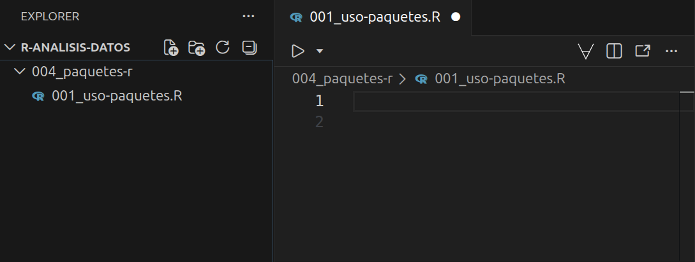
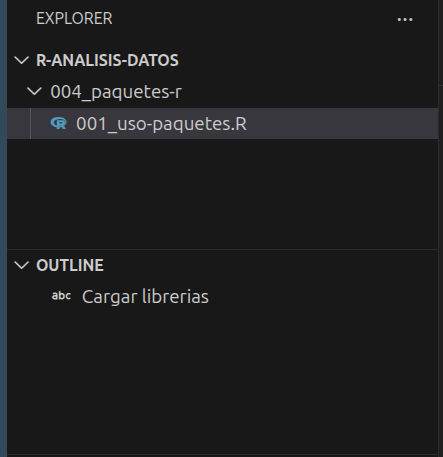
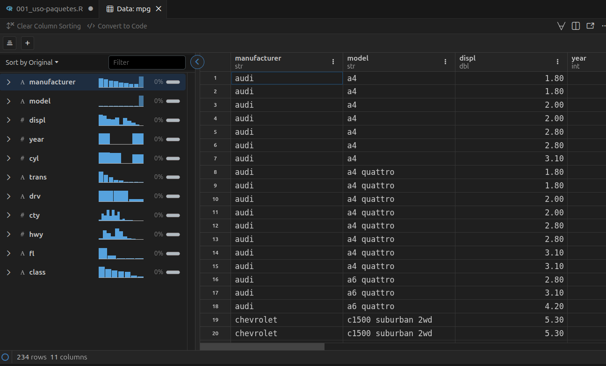

# Cargar librerias ----
library(tidyverse)4 Paquetes de R
Este capítulo se basa en (Ismay, 2025, Capítulo 1) y tiene como propósito introducir el concepto de paquetes de R. Exploraremos los siguientes aspectos:
- ¿Qué son los paquetes de R?
- ¿Cómo instalar paquetes?
- ¿Cómo cargar paquetes?
- Una demostración de cómo utilizar un paquete
4.1 ¿Qué son los paquetes de R?
En R un paquete, en términos simples, es una carpeta organizada de cierta forma que alguién más creó que te brinda herramientas listas para usar con el objetivo de realizar una tarea específica o extender la funcionalidad base de R. De hecho, cuando instalas R por primera vez, este ya viene con un grupo de paquetes estandar (o de base) por defecto que le permiten funcionar y realizar ciertas tareas. Independientemente de si un paquete esta incluido en R por defecto o tiene como proposito extender su funcionalidad, su estructura siempre consta de 3 elementos (Wickham & Bryan, 2023):
Funciones: son instrucciones predefinidas que reciben una información, la procesan y entregan un resultado para realizar una tarea específica de manera automática.
Documentación: es la guía que explica que hace cada función, que requiere para funcionar y que resultado genera.
Datos de muestra: son conjuntos de datos para ilustrar el funcionamiento de las funciones.
Para entender cómo funcionan los paquetes en R se puede utilizar una analogía con las aplicaciones de un celular (Ismay, 2025, Capítulo 1). Cuando compras un celular nuevo, este viene por defecto con aplicaciones para que se pueda utilizar. Sin embargo, de acuerdo a las necesidades de cada usuario se instalan otras aplicaciones adicionales para extender la funcionalidad del celular de tal manera que se cubran los requerimientos que cada individuo necesita (Ver Figura 4.1).


4.2 Instalación de paquetes
Para instalar un paquete que no vienen por defecto en R, retomaremos la analogía de la Sección 4.1. En un celular, primero es necesario descargar la aplicación de una tienda una sola vez. Luego, basta con abrirla cada vez que se requiera. Aunque ocasionalmente deba actualizarse, no es necesario reinstalarla nuevamente.
En R, el proceso es semejante. Primero instalas el paquete desde un repositorio (equivalente a la tienda de aplicaciones) y luego lo cargas, un paso análogo a abrir la aplicación en tu celular.
Para practicar este proceso, instalaremos el paquete tidyverse. Este paquete es una colección de herramientas diseñadas para ciencia de datos que utilizaremos constantemente a lo largo del libro. Para iniciar la instalación, ubica la pestaña Console en el Panel (Ver la Figura 2.4) y, tras el símbolo >, escribe el siguiente comando:
install.packages("tidyverse")Luego, presiona EnterEnter. Ten paciencia hasta que el proceso finalice y no te preocupes por los mensajes que aparezcan en la consola. Al ser un conjunto robusto de herramientas, la instalación puede tardar. Sabrás que ha terminado el proceso cuando veas aparecer nuevamente el símbolo >.
Importante
Al instalar un paquete en R, asegúrate de escribir su nombre entre comillas (""). De lo contrario, la instalación fallará. Por ahora, no te preocupes por la razón detrás de éste aspecto. Lo importante por ahora es que te asegures que puedas saber cómo instalar un paquete en R.
4.3 Carga de paquetes
Cuando instalas una aplicación en tu celular es necesario abrirla para poder usarla, no basta con simplemente instalarla. En R para poder utilizar un paquete que se encuentre instalado previamente es necesario cargarlo (equivalente a abrir una aplicación que se encuentra instalada en un celular). En R para cargar un paquete se utiliza el comando library().
Por ejemplo, si deseas cargar el paquete tidyverse escribe el siguiente comando en la consola:
library(tidyverse)Luego, presiona EnterEnter. Si el paquete tidyverse fue instalado de manera correcta se generará un texto (ver el Listado 4.1) igual o similar al que se muestra a continuación en la consola:
── Attaching core tidyverse packages ── tidyverse 2.0.0 ──
✔ dplyr 1.2.0 ✔ readr 2.2.0
✔ forcats 1.0.1 ✔ stringr 1.6.0
✔ ggplot2 4.0.2 ✔ tibble 3.3.1
✔ lubridate 1.9.5 ✔ tidyr 1.3.2
✔ purrr 1.2.1
── Conflicts ──────────────────── tidyverse_conflicts() ──
✖ dplyr::filter() masks stats::filter()
✖ dplyr::lag() masks stats::lag()
ℹ Use the conflicted package to force all conflicts
to become errors
Nota
En el Capítulo 5 podrás explorar más acerca de los tipos de texto que la consola puede generar y cómo interpretarlos cuando se genere algún contenido. Allí explicaremos en particular el texto del Listado 4.1.
4.4 Uso de paquetes
Para entender cómo utilizar un paquete, explorarás tu primera base de datos en R utilizando el paquete tidyverse. Primero, cierra la ventana de Positron si seguiste las instrucciones descritas en la Sección 2.2 y abre la carpeta r-analisis-datos (Ver Sección 3.2) utilizando las opciones File > Open Folder… que podrás encontrar en el menú superior izquierdo de la interfaz. En caso que estes utilizando Posit Workbench (Ver Sección 2.3) abre una sesión con el proyecto r-analisis-datos, creado de acuerdo a lo señalado en la Sección 3.2.
Luego, en la Barra de actividades (ver Figura 2.4) selecciona el ícono y párate con el puntero del ratón en la Barra lateral primaria (ver Figura 2.4) donde al lado izquierdo de la etiqueta R-ANALISIS-DATOS podrás encontrar en el segundo ícono de izquierda a derecha la opción de crear una carpeta. Crea la carpeta con el nombre 004_paquetes-r y dentro de la carpeta también en la Barra lateral primaria utiliza el primer ícono de izquierda a derecha para crear un archivo con el nombre 001_uso-paquetes.R. De esa manera podras abrirlo en el Editor (ver Figura 2.4) tal como se muestra en la Figura 4.2:

En el archivo 001_uso-paquetes.R carga el paquete tidyverse escribiendo el contenido que se menciona a continuación. Para que R procese la instrucción, sitúa el cursor (|) sobre la línea de código y presiona la combinación de teclas :
Nota 4.1
Cada vez que requieras ver el resultado de una línea de código que se encuentra dentro de un archivo con extensión .R sitúa el cursor (|) sobre la línea de código y presiona la combinación de teclas . De ahora en adelante nos referimos a éste proceso como ejecutar el código.
En el Listado 4.2 el símbolo # permite agregar comentarios para entender los comandos que escribimos y ---- genera secciones para mantener organizado el contenido dentro de un archivo con extensión .R donde las señala en la Barra lateral primaria en la sección OUTLINE (Ver Figura 4.3) en Positron. Un archivo de este tipo por si sólo no genera ningún resultado. Por ello, debes utilizar la combinación de teclas mencionada anteriormente para ejecutar los comandos en el Editor y mostrar el resultado señalado en el Listado 4.1 en el Panel (ver Figura 2.4) dentro de la pestaña CONSOLE.

Una vez cargado el paquete tidyverse puedes explorar la base de datos mpg que contiene información de economía de combustible desde 1999 hasta 2008 para 38 modelos populares de automóviles. Agrega al archivo 001_uso-paquetes.R el siguiente contenido y ejecuta el código (Ver Note 4.1) para que puedas visualizar parte de los datos en la consola donde el resultado puede variar dependiendo del tamaño de la pantalla de tu equipo:
mpg
# Explorar base de datos mpg ----
mpg# A tibble: 234 × 11
manufacturer model displ year cyl trans drv cty
<chr> <chr> <dbl> <int> <int> <chr> <chr> <int>
1 audi a4 1.8 1999 4 auto… f 18
2 audi a4 1.8 1999 4 manu… f 21
3 audi a4 2 2008 4 manu… f 20
4 audi a4 2 2008 4 auto… f 21
5 audi a4 2.8 1999 6 auto… f 16
6 audi a4 2.8 1999 6 manu… f 18
7 audi a4 3.1 2008 6 auto… f 18
8 audi a4 quat… 1.8 1999 4 manu… 4 18
9 audi a4 quat… 1.8 1999 4 auto… 4 16
10 audi a4 quat… 2 2008 4 manu… 4 20
# ℹ 224 more rows
# ℹ 3 more variables: hwy <int>, fl <chr>, class <chr>En el resultado del Listado 4.3 se incluye información para entender aspectos de la base de datos mpg:
# A tibble: 234 × 11indica en primera instancia el tipo de objeto en R denominadotibbledonde se compone de234filas y11columnas.Una
tibblesolo muestra la cantidad de columnas que caben en tu pantalla. Por ese motivo se señalan en la parte superior los nombres de las columnasmanufacturer,model,displ,year,cyl,trans,drv,ctyy luego en la parte inferior las variables restanteshwy,flyclassen el mensaje# ℹ 3 more variables: hwy <int>, fl <chr>, class <chr>.Debajo de los nombres de las columnas se indica el tipo de dato que corresponde a cada variable (p. ej.,
<chr>,<dbl>,<int>). En caso que no se puedan mostrar todas las columnas en la pantalla, en la parte inferior se señalan los tipos restantes de las demás columnas. Las diferentes opciones de tipos de columnas se pueden consultar en la documentación oficial en Column types.Por defecto una
tibblesolo muestra las primeras 10 filas pero señala en la parte inferior con el mensaje# ℹ 224 more rowsel número de filas restantes que componen la base de datos.
Si la base de datos pertenece a un paquete, como en el caso de mpg, es posible consultar documentación acerca de la misma utilizando el símbolo ? mas su nombre tal como se muestra a continuación:
# Documentación base de datos mpg ----
?mpgSi ejecutas éste código en la Barra lateral secundaria dentro de la pestaña HELP se desplegará la documentación relacionada con mpg.
En Positron también se puede utilizar una herramienta denominada Explorador de Datos para visualizar la información en una cuadrícula similar a una hoja de cálculo, así como filtar y ordenar los datos temporalmente y obtener estadísticas de cada variable. Para utilizar ésta herramienta ejecuta el siguiente código:
# Uso del explorador de datos
View(mpg)De esa manera podrás utilizar el explorador de datos y examinar los elementos indicados anteriormente para mpg tal como se muestra en la Figura 4.4.

mpg